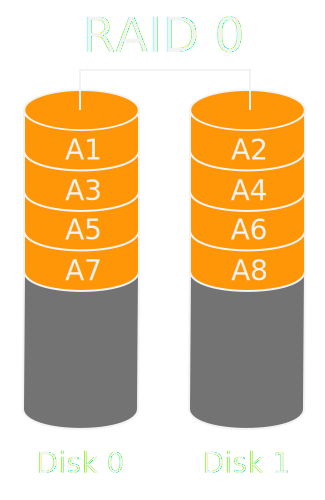
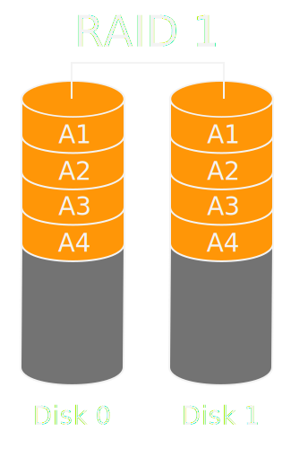
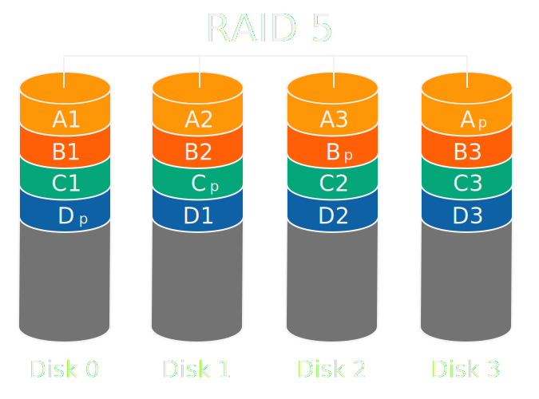
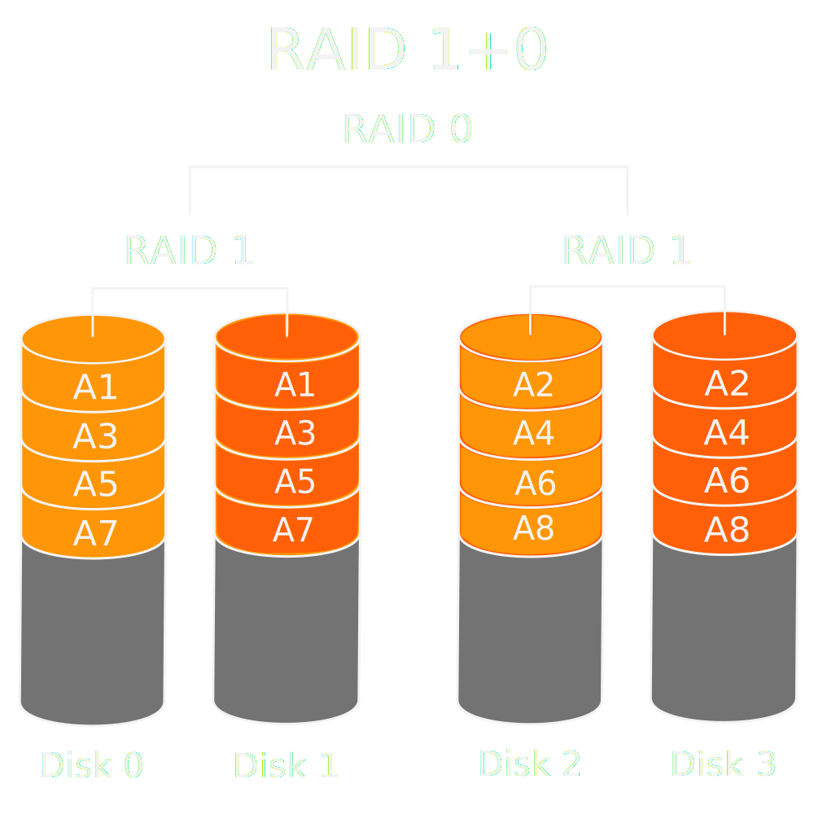

name: dark layout: true class: center, dark --- <br/> #Filesystem e Dischi ##Problemi e soluzioni ###Federico Amedeo Izzo ```html federico.izzo42@gmail.com ``` ### --- <br/><br/> #Benvenuti <br/><br/> ###Queste slides sono disponibili su ```html filesystem.izzo.ovh ``` --- name:sign layout:true class:dark .sign[Federico Amedeo Izzo] .course-right[Corsi Linux Avanzati 2015 - [POuL](https://poul.org)] --- name:Argomenti .title[##Argomenti principali:] <br/> -- <!--Impara a usare questa cosa .middle[.text[##test]] --> <!--Impara a usare anche .dark[]--> - ##Disk failure e silent data corruption -- <br/><br/> - ##Privacy dei dati -- <br/><br/> - ##Volume management -- <br/><br/> - ##Snapshot / Backup <!--Per chiudere a manina una lista si può usare </ul>--> --- name:Disk failure .title[##Disk failure: Gli hard disks si rompono] ###Se un hard disk si rompe, i dati al suo interno vengono persi (a meno di un backup) -- <br/><br/> ##Una soluzione è il RAID ####Redundant Array of Independent Disks ###Divide i dati su più dischi fornendo permettendo: - ###Sopravvivenza alla rottura di uno o più dischi - ###Aumento di prestazioni rispetto ad un disco singolo --- name:raid0 .title[##RAID 0] <br/> ### ##Divide i dati su più dischi ##effettuando lo _striping_ <br/> ##__pro__: alte prestazioni su R / W ##__contro__: affidabilità __peggiore__ ##di un disco singolo, ##non fault tolerant --- name:raid1 .title[##RAID 1] <br/> ### ##Data _mirroring_ ##tra due o più dischi <br/> ##__pro__: buona velocità lettura, ##fault tolerant ##__contro__: velocità scrittura pari al ##disco più lento --- name:raid5 .title[##RAID 5] <br/> ### ##Data _striping_ ##with distributed _parity_ <br/> ##__pro__: lettura veloce, ##fault tolerant ##__contro__: scrittura lenta ##per calcolo XOR --- name:raid10 .title[##RAID 10 (1+0)] ### <br/> ##Data _striping_ ##between _mirrored_ disks <br/> ##__pro__: Performance ottime, ##fault tolerant ##__contro__: richiede 4 dischi, ##solo metà della capacità è utilizzabile. --- name:silent_data_corruption .title[##Inconvenienti:] ##RAID protegge solo dalla rottura di un disco, non protegge da errori R/W o dati corrotti. <br/> ##__silent data corruption:__ ##Il cambiamento anche di un solo bit può portare a corruzione dei dati, che noteremo solo al momento del loro utilizzo. ##Se non eliminato, un errore può venire replicato in un backup. --- name:soluzioni .title[##Soluzioni:] - ##__data scrubbing:__ ## controllo periodico del disco che segnala _bad sectors_ e inconsistenze con i parity bit o tra le copie, ## Non sempre è in grado di decidere quale di due dati discordanti è quello sano. - ##filesystem con __checksum dei blocchi__: ZFS o Btrfs --- name:ZFS .title[#ZFS] ##Creato da Sun Microsystems nel 2005 ##Distribuito con licenza incompatibile con GPL, problemi di integrazione nel kernel linux .title[#Btrfs] ##Sviluppato da Oracle nel 2007, attualmente contribuiscono Facebook, Intel, Red Hat. --- name:features .title[##Entrambi dispongono di features avanzate:] - ##CopyOnWrite - ##Block-level checksums (data & metadata) - ##Funzionalità RAID integrate - ##Volume management - ##Snapshots - ##Deduplication (Btrfs) <!-- FINE TESTO -->